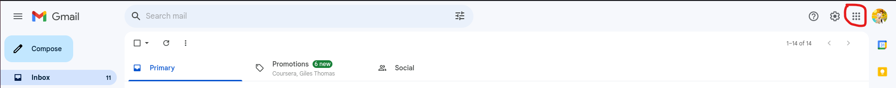
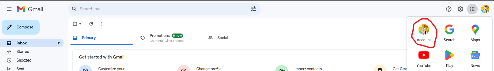
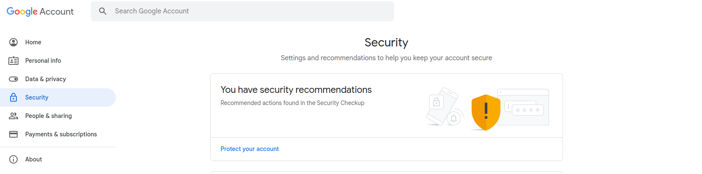
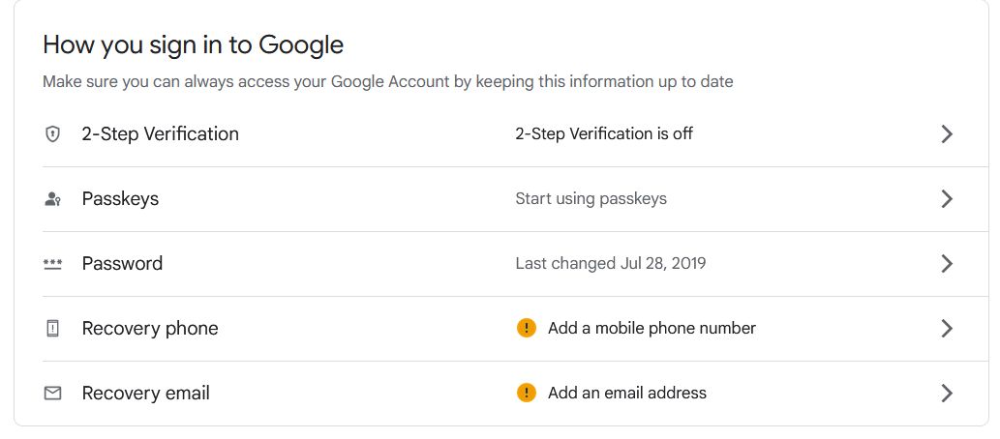
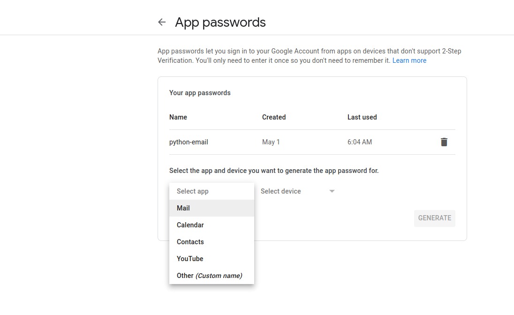
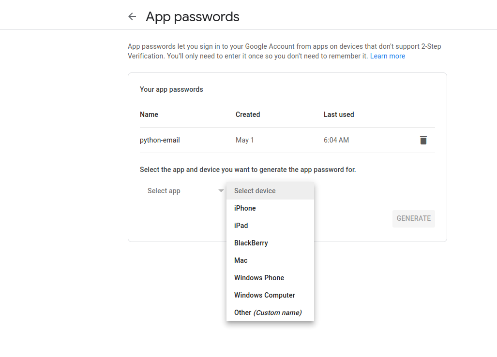
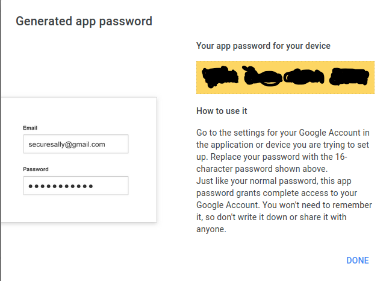

Email services play a crucial role in today’s software applications, allowing essential features like user verification and notifications. In this post, I’ll walk you through the process of setting up Gmail’s SMTP service. By the end, you’ll have the knowledge to send emails programmatically using your Gmail account.
Step 1: Create or Log In to a Gmail Account
To utilize Gmail’s SMTP service, you must have a Gmail account. If you don’t have one yet, follow the simple steps to create a new account. Alternatively, if you already have a Gmail account, proceed by logging in as usual.
Step 2: Go to your Account Settings
To navigate to your Account Settings, follow these steps:
Locate the Google apps button, which appears as a square made up of nine dots, typically located to the right of your profile picture.
Click on the Google apps button, and a menu will appear.
From the menu, select Account to access your Account Settings.
Step 3: Turn On Two-Factor Authentication
It is impossible to use Gmail’s SMTP service without turning two-factor authentication on. Hence, do the following to set it up.
a. Select the Security tab.
b. Go to the How you sign in to Google section.
c. Follow the required steps to set up Two-Factor Authentication in Google.
Step 4: Create an App Password
Google provides a handy feature called App Passwords, which makes email authentication a breeze for your software applications. Instead of using your usual password, you can generate a special app password dedicated to your code. This ensures a secure and seamless authentication process for sending emails programmatically.
Follow these steps to set up an app password.
a. Choose the 2-Step Verification option.
b. Click the App passwords option that is right at the bottom of the page.
Select Mail on the Select app drop-down list.
d. Select Other (custom name) on the Select device drop-down list.
e. Write a unique name for your app.
